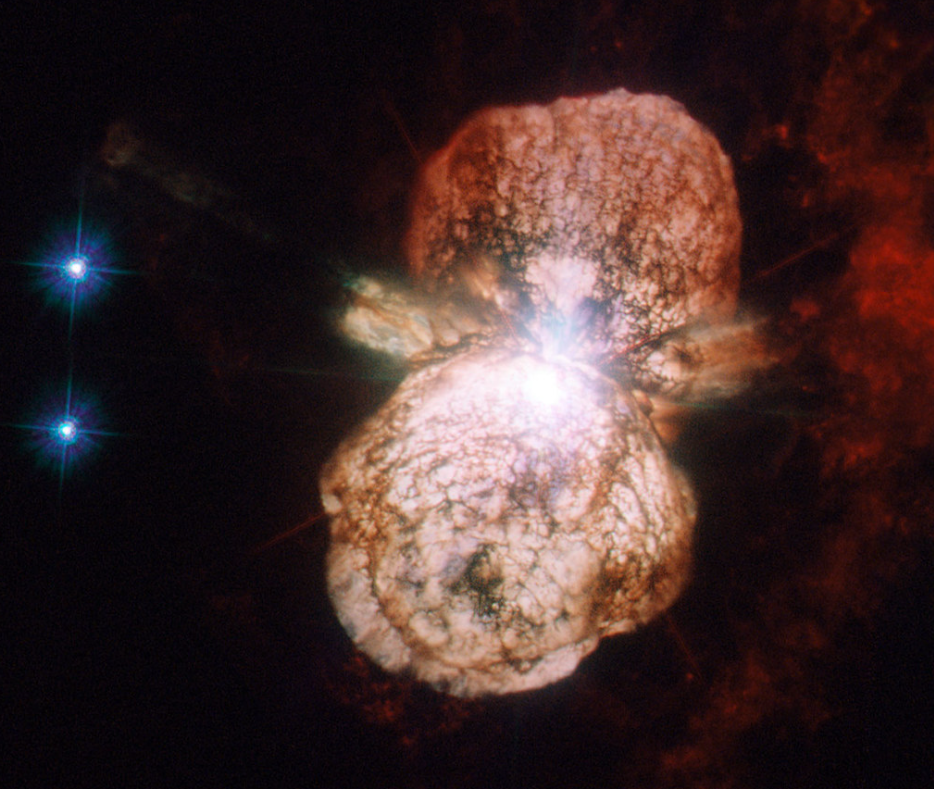
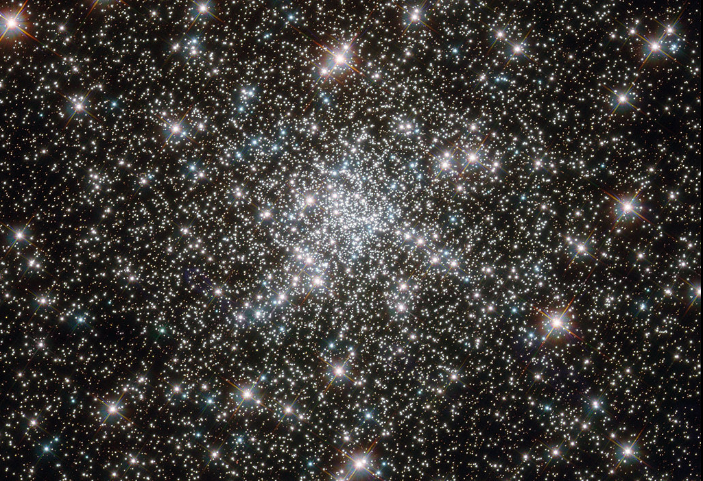
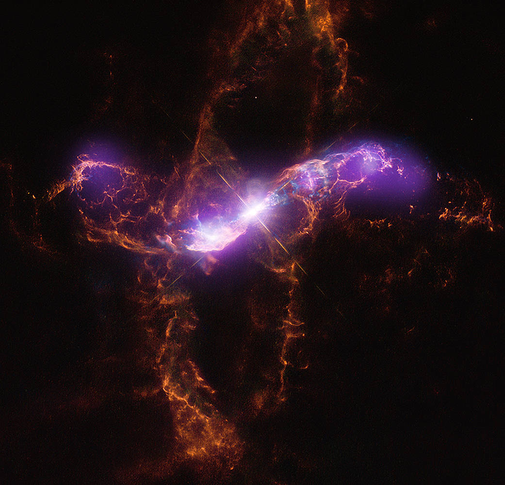
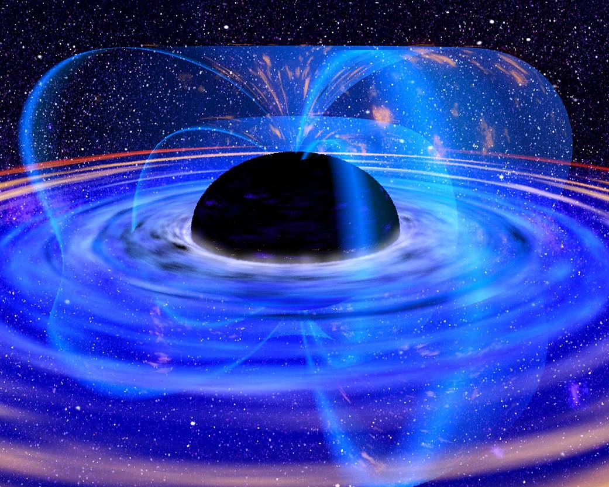
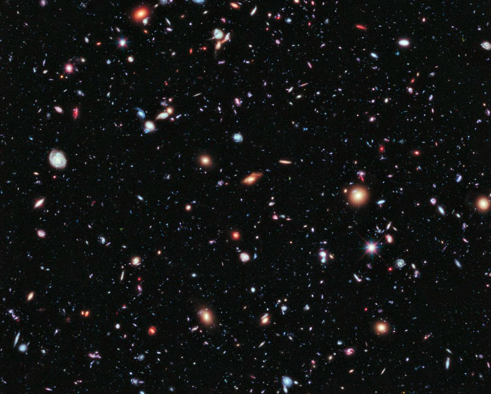
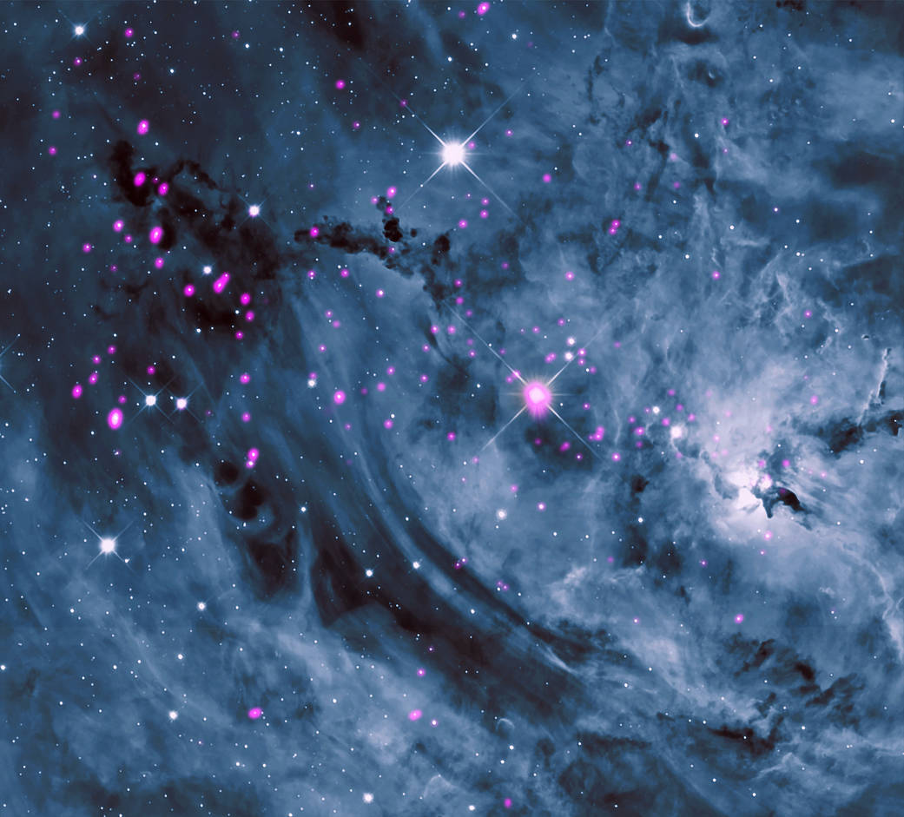

Aprecie as incriveis fotos reais:

Acertando o Relógio em uma Explosão Estelar Uma nova imagem de SNR 0519-69.0 mostra os detritos de uma estrela que explodiu várias centenas de anos atrás no período de tempo da Terra.

Hubble estuda uma espiral espetacular A galáxia NGC 1961 desenrola seus lindos braços espirais nesta imagem recém-lançada do Telescópio Espacial Hubble da NASA.
Eta Carinae é um sistema estrelar localizado a 7.500 anos-luz de nós. Há ao menos duas estrelas que, combinadas, emitem cerca de 5 milhões de vezes mais energia que nosso Sol. Uma das estrelas tem liberado gás quente que expandiu para um par de uma espécie de balões. Por décadas, astrônomos se perguntam se está à beira da destruição, e se vai estourar em uma violenta supernova. A última imagem do que parecem ser fogos de artifício foi divulgada neste ano, tirada por uma câmera do telescópio Hubble.
O Telescópio Espacial Hubble capturou uma multidão de estrelas que mais parece um estádio escurecido antes de um show, iluminado apenas pelos flashes das câmeras da plateia. No entanto, as muitas estrelas desse objeto, conhecido como Messier 107, não são um fenômeno passageiro, pelo menos pelo cálculo humano do tempo - essas estrelas antigas brilharam por muitos bilhões de anos. Messier 107 é um dos mais de 150 aglomerados globulares de estrelas encontrados ao redor do disco da Via Láctea. Cada uma dessas coleções esféricas contém centenas de milhares de estrelas extremamente antigas e estão entre os objetos mais antigos da Via Láctea. A origem dos aglomerados globulares e seu impacto na evolução galáctica permanecem um tanto obscuros, então os astrônomos continuam a estudá-los. Messier 107 pode ser encontrado na constelação de Ophiuchus (O Portador da Serpente) e está localizado a cerca de 20.000 anos-luz de nosso sistema solar.
R Aquarii: Uma Expansão de Luz Este objeto é, na verdade, um par: uma estrela anã branca que queima constantemente a uma temperatura relativamente fria e uma gigante vermelha altamente variável.

Estrelas de nêutrons colidem Duas estrelas de nêutrons começam a se fundir nesta ilustração, lançando um jato de partículas de alta velocidade e produzindo uma nuvem de detritos.
Buracos negros são difíceis de encontrar Os buracos negros são difíceis de encontrar. Eles têm uma gravidade tão forte que a luz não pode escapar deles, então os cientistas devem confiar em pistas de seus arredores para encontrá-los.
Nesta terça-feira (12), a Nasa divulgou novas imagens capturadas pelo telescópio James Webb, equipamento de observação mais poderoso já lançado ao espaço. A mais de 1 milhão de quilômetros de distância, o dispositivo conseguiu mostrar até galáxias de 13 bilhões de anos.

Nuvens de gás cobrem toda a vista, em uma variedade de cores ousadas. No centro o gás é mais brilhante e muito texturizado, lembrando uma fumaça densa. Nas bordas é mais esparso e mais fraco. Várias pequenas estrelas azuis brilhantes estão espalhadas pela nebulosa. Hubble vê uma nuvem cósmica repleta de estrelas
A Nebulosa da Lagoa dá à luz estrelas Conhecida como NGC 6523 ou a Nebulosa da Lagoa, Messier 8 é uma gigantesca nuvem de gás e poeira onde nascem as estrelas.